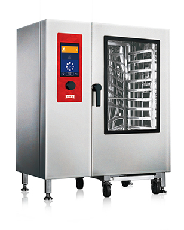
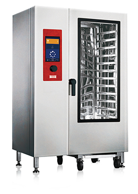

INDUCTION · SOUP KETTLE
인덕션 국솥 · HIK 시리즈

대량 국·탕류 조리를 위한 인덕션 열원 제품군.
모델: HIK-500 / HIK-400 / HIK-200 · 500/400/200인용. HIK-500은 1670×1260×1040mm, 30kW, 내부 용량 220L(보관 비교자료 기준). 제조사 보관자료에는 HIK와 HMK의 모델명 표기 차이가 있으므로 계약 전 확인 필요. 원본 상세사양 보기
현장의 에너지원·조리량·공조 조건을 함께 검토하는 제품 선택. 국솥·취반기 원본 이미지와 비교자료, 스팀컨벡션오븐의 제조사 보관 제품설명서를 바탕으로 정리했습니다. 모델과 에너지원별 설치조건을 확인하세요.
대량 국·탕류 조리를 위한 인덕션 열원 제품군.
모델: HIK-500 / HIK-400 / HIK-200 · 500/400/200인용. HIK-500은 1670×1260×1040mm, 30kW, 내부 용량 220L(보관 비교자료 기준). 제조사 보관자료에는 HIK와 HMK의 모델명 표기 차이가 있으므로 계약 전 확인 필요. 원본 상세사양 보기
가스 열원을 사용하는 대량 조리 국솥 제품군.
모델명·용량·가스소비량·규격·사진: 원본 대조 중

단체급식용 인덕션 취반 설비 제품군.
HSR-503I 150인용, HSR-502I 100인용, HSK-50SI 내부 솥 50인용. HSR-503I 크기 735×700×1335mm, 전력 10.5kW; HSR-502I 전력 7kW(보관 제품자료 기준). 원본 상세사양 보기
가스 열원 기반의 취반 설비 제품군.
모델명·취반량·가스소비량·규격·사진: 원본 대조 중
자료 출처(사용 허락 확보: 사용자 확인): 한신푸드 조리기기 목록 ① · 한신푸드 제품 목록 ②
본 제품군 분류는 편집 중인 검토용 페이지입니다. 가스 제품의 실제 모델 사진과 사양은 아직 확보하지 못했습니다. 인덕션 제품 자료는 원본 이미지에서 확인했으며, 재고·판매 조건·현재 사양은 최종 확인 후 게시합니다. 제품 사양을 임의 생성하지 않습니다.
보관된 제조사 제품 원본 HTML에서 모델명, 형식, 급배수와 전기·가스 조건을 확인했습니다. 제품사진은 사용자가 추가 사용허락을 받았다고 확인한 자료를 활용했습니다. 20단은 세로형, 24단은 가로로 긴 형태로 분리했습니다. 40단 및 세부 모델의 사진 일치 여부는 최종 검수 시 확인합니다.
20단: 세로로 높게 설계된 형태. 제조사 보관 원본(TOS-201E 전기식)의 사진을 정확하게 매칭하여 교체 예정이며, 24단 이미지는 사용하지 않습니다.
20단 전기식 · 1125×910×1950mm · 20×1/1GN · 29.0kW · 3N AC 380V, 60Hz · 급수 20A/배수 40A
스마트 스팀 보일러·자동청소·HACCP 관리 기능: 제조사 설명 기준

20단 세로형과 구분되는 가로로 긴 제품 형태입니다. 원본 파일명은 ‘24단_400.jpg’이며 정확한 모델·에너지원·설치규격은 별도 제조사 사양 확인 후 확정합니다.

40단 전기식 · 1330×910×1950mm · 40×1/1GN · 57.5kW · 3N AC 380V, 60Hz · 급수 20A/배수 40A
공통 외형 참고사진이며 가스식 모델과의 외관 일치 여부 검토 필요
40단 가스식 · 1330×910×1950mm · 40×1/1GN · 가스소비량 58.0kW (49,880kcal/h) · 보조전원 AC 220V/1.45kW · 급수 20A/배수 40A
급식량, 전력·가스 용량, 급수·배수, 환기·후드, 유지관리 공간을 종합적으로 검토해 설치 장비를 선택합니다.
구글드라이브의 ‘위생기_아풍오닉스’ 폴더에서 ‘살균기본설명서.pdf’ 원본을 확인했습니다. PDF의 판독 가능한 텍스트와 상세 제품 이미지를 아직 추출하지 못했으므로 제품 모델·살균효과·처리량 등은 확정하지 않았습니다.